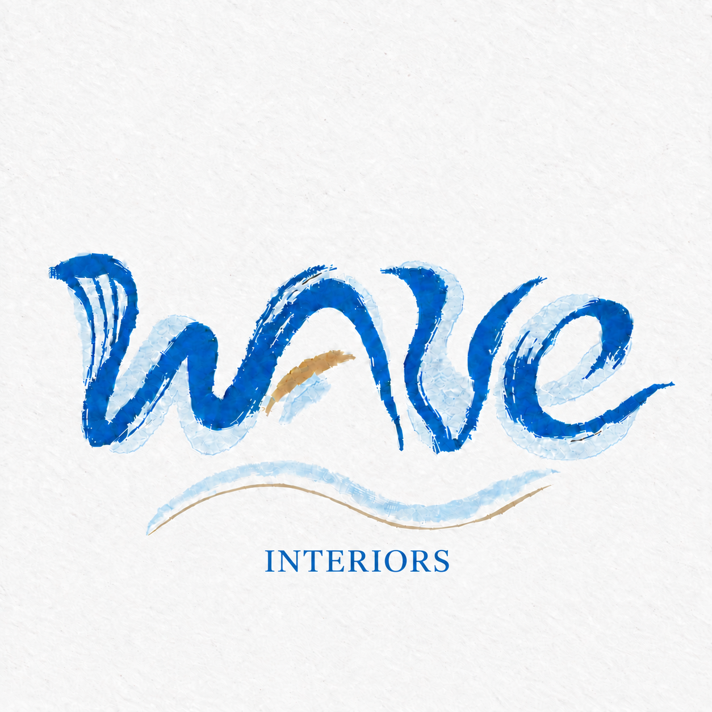

MARZOOK / GROUND FLOOR
区域搭配，随心成板MOODBOARD STUDIO
从图纸确定区域，用你选中的家具比较颜色、材质和造型。
YOUR SELECTED SCHEMES / KELLY WEARSTLER INSPIRED
你的三套软装方案
单品可单独拖动、替换和继续增加
拖动移动 · 右下角缩放 · 选中后旋转 / 镜像 · Delete 移除

家具搭配工作室自动保存MARZOOK / GROUND FLOOR
从图纸确定区域，用你选中的家具比较颜色、材质和造型。
YOUR SELECTED SCHEMES / KELLY WEARSTLER INSPIRED